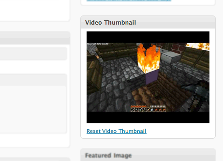
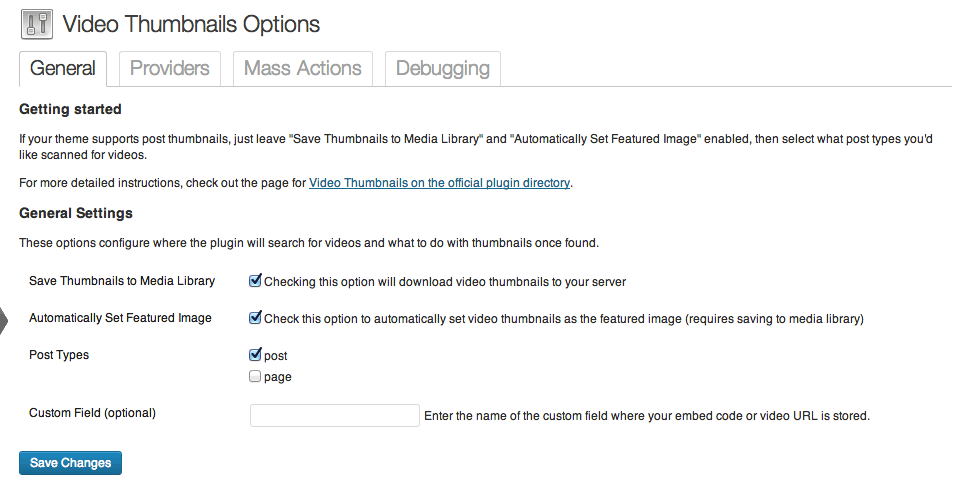

We have already discussed how to add thumbnails or featured images in WordPress automatically. In this post, we are gonna discuss about Video thumbnails plugin by Sutherlandboswell. If you embed videos in post quite often then this plugin could be a better option for you. It generates the thumbnail for an embedded video, adds it to your media library and sets it as a thumbnail for that particular post automatically.
As of now it supports only below services.
- YouTube
- Vimeo
- Blip
- Justin.tv
- Dailymotion
- Metacafe
- Funny or Die
- MPORA
- Wistia
- Youku
- CollegeHumor
Which means when you include a YouTube video in a post, this plugin finds the video, generates thumbnails and adds it for that post.
Note: If you have more than one video in your post, it will consider the first video for thumbnail.
What are the advantages of having video thumbnails?
1) Thumbnails for related posts would look attractive, thereby chances of getting high CTR.
2) No plugin is required for generating thumbnails for posts, this plugin does it automatically.
Installation
Download the plugin from here: http://wordpress.org/plugins/video-thumbnails/
Plugin in action
In the WordPress dashboard you can see the video thumbnails box enabled just above the featured image box. From there you can reset and change the thumbnail, if you wish to do so. This is how it would look in the right sidebar of the post editor in WordPress –

Configuration
As you can see in the below settings screen that you can choose to download the video thumbnails to your server. You can have them set as featured image for the post optionally.
You can also enable this feature for pages by selecting the page in Post types field. It also supports custom field.

Let us know how is you experience with this plugin. Also, do let us know if you use any other plugin for fetching and setting up the video thumbnails automatically.